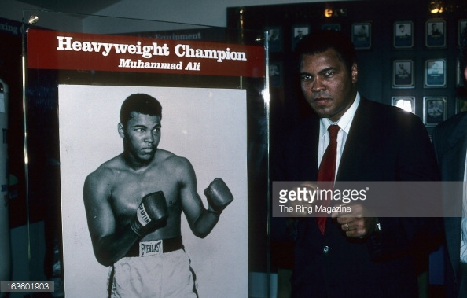

The following are the awards that Muhammad Ali had recieved in chronological order.
- 1959: National Golden Gloves Light Heavyweight Champion
- 1959: National Amateur Athletic Union champion
- 1960: National Golden Gloves Light Heavyweight Champion
- 1960: National Amateur Athletic Union champion
- 1960: Gold medal, Rome Olympics, light-heavyweight boxing
- 1964-67: World Heavyweight Champion
- 1970: Dr. Martin Luther King Memorial Award
- 1974: Sportsman of the Year, Sports Illustrated
- 1974: Fighter of the Year, Boxing Writers Association
- 1974-78: World Heavyweight Champion
- 1978-79: World Heavyweight Champion
- 1979: Honorary Doctorate of Humane Letters, Texas Southern Univesity
- 1979: Street named after him in Louisville, Kentucky
- 1985: Recognized for long, meritorious service, World Boxing Association
- 1987: Elected to Boxing Hall of Fame
- 1990: Inducted into International Boxing Hall of Fame
- 1996: Lights Olympic torch, Atlanta
- 1997: Arthur Ashe Award for Courage, ESPN
- 1997: Essence Living Legend Award

Muhammad Ali is shown as being part of part of the Boxing Hall of Fame